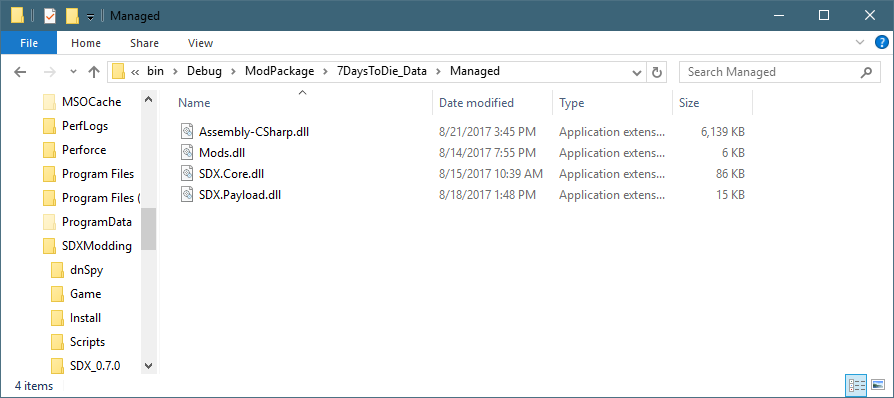
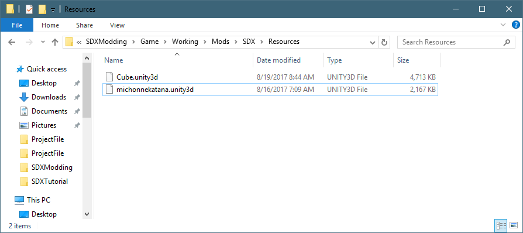

Introduction
SDX modding is an enhanced form of modding for the 7 Days to Die game. It allows us to add custom scripts, custom textures and blocks, as well as add entirely new biomes to the world, creating an immersive experience styled to your players and yourself.
While the SDX community has done some amazing things with the game since it's introduction, there lacks a central distribution and documentation aspects to it. This has caused considerable confusion for people who are anxious to get started, since they don't necessarily know how to get started, or even what all of this SDX stuff is about.
That's where this site comes in, to de-mystify SDX and help you get started creating new mods, reaching more people, and finally helping you create a game play that is styled perfectly for you.
Note: SDX is not EAC compatible. If you attempt to load up SDX with EAC enabled, you will get an error.
Note: SDX Servers require a Client Install for players to connect to, and play.
So what is SDX modding?
SDX modding lets you add your own textures, your own blocks, characters, animations, and complex code. It does so by instrumenting the Assembly-CSharp.dll with SDX hooks, allowing it to load up Unity3D texture bundles.
Custom scripts can be written that get compiled into the Mods.dll file, found in the 7DaysToDie_Data/Managed folder, and merged with the Assembly-CSharp.dll at run time.

The actual Unity3D bundles, which are the files where the textures and models are stored in, can be found under your Mods/SDX/Resources folder

Created with the Personal Edition of HelpNDoc: Free Web Help generator